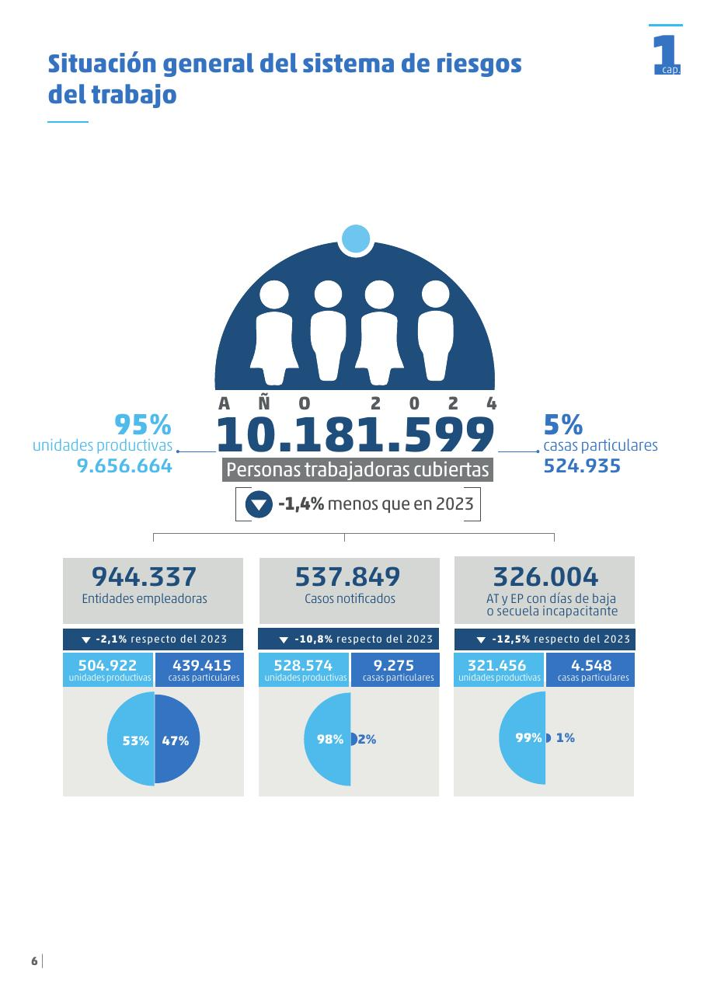

Explorá
Observá información, formulá preguntas y reconocé patrones.
Departamento de Estadística · FaEA · UNCo
Material digital de Estadística · Tecnicatura Universitaria en Higiene y Seguridad en el Trabajo · UNCo
Explorar datos para comprender fenómenos, analizarlos con herramientas estadísticas e interpretar los resultados con sentido crítico.
Teórico digital interactivo
Este material reúne las Unidades 1 a 4. El primer recorrido describe datos; el segundo incorpora la probabilidad para razonar sobre resultados inciertos; el tercero comienza a modelar esos resultados mediante variables aleatorias y distribuciones de probabilidad. Podés usarlo antes de una clase, para estudiar un tema por primera vez o para volver a consultarlo.
Observá información, formulá preguntas y reconocé patrones.
Elegí procedimientos y representaciones adecuados al problema.
Explicá qué significan los resultados y cuáles son sus límites.
Estación 1 · Problema
La Estadística ayuda a formular preguntas, organizar información y construir conclusiones fundamentadas. Un número aislado no alcanza: necesitamos saber qué se midió, sobre qué población, con qué definiciones y durante qué período.

La infografía resume indicadores del Sistema de Riesgos del Trabajo durante 2024. Presenta, entre otros datos, la cantidad de entidades empleadoras, los casos notificados y los accidentes de trabajo o enfermedades laborales con días de baja o secuelas incapacitantes. También distingue entre unidades productivas y casas particulares.
Estos indicadores ofrecen una primera descripción del período y permiten formular nuevas preguntas para profundizar el análisis.
¿Por qué analizar informes como este? En Higiene y Seguridad Laboral, muchas decisiones no se toman a partir de un único accidente o de una observación aislada, sino del análisis de bases de datos, registros e informes estadísticos. Estas fuentes permiten identificar problemas frecuentes, detectar tendencias, priorizar acciones preventivas y fundamentar decisiones con evidencia.
Para pensar: ¿qué otras preguntas podrían responderse con este informe? Por ejemplo, ¿qué actividades presentan mayor cantidad de accidentes?, ¿cómo evolucionaron los indicadores respecto de años anteriores? y ¿qué información adicional sería útil para comprender las causas y planificar acciones preventivas?
“En 2024 hubo menos casos notificados que en 2023; por lo tanto, las condiciones laborales mejoraron”.
Una comparación entre períodos requiere analizar tanto los valores observados como el tamaño de la población expuesta y la forma en que fueron construidos los indicadores.
Estación 2 · Recorrido de investigación
Una investigación estadística es un proceso cíclico e iterativo. Las conclusiones suelen generar nuevas preguntas, revisar el plan o recoger nuevos datos.
La sigla toma las iniciales en inglés de cinco momentos de una investigación estadística:
Ayuda a reconocer que investigar no consiste solo en calcular: primero se formula una pregunta, luego se decide qué observar y registrar, se analizan los datos y se comunican conclusiones que pueden abrir un nuevo ciclo.
En Higiene y Seguridad, esa lógica aparece al observar condiciones de trabajo, reunir información, clasificar incidentes, buscar patrones y evaluar acciones preventivas.
Hacé clic en cada nodo para ver qué preguntas orientan esa parte del ciclo.
“Se decide medir ruido, iluminación y temperatura en una muestra de puestos seleccionados por sector”. ¿En qué etapa se encuentra principalmente el estudio?
Estación 3 · Problema y Plan
Un municipio quiere describir las condiciones de seguridad de los comercios habilitados durante el último año. Para ello releva una selección de establecimientos y registra distintas características.
Conjunto completo de unidades sobre las que se desea obtener información.
En el caso: todos los comercios habilitados del municipio durante el período definido.
Subconjunto de la población que se observa efectivamente.
En el caso: los comercios seleccionados para el relevamiento.
Elemento individual sobre el cual se registran los datos.
En el caso: cada comercio observado.
Característica que puede tomar diferentes valores o categorías entre las unidades.
En el caso: rubro, cantidad de trabajadores, presencia de salida de emergencia o nivel de iluminación.
Se seleccionan 60 aulas entre todas las aulas de una universidad y se mide la concentración de dióxido de carbono durante una clase.
Estación 4 · Plan
Un censo observa todas las unidades. Un estudio muestral observa una parte. La decisión depende del objetivo, el tamaño de la población, el costo, el tiempo y la precisión requerida.
Puede ser apropiado cuando la población es pequeña o se necesita información individual de todas las unidades.
Permite trabajar con poblaciones grandes, siempre que el procedimiento de selección sea adecuado al objetivo.
Cada unidad tiene una probabilidad conocida e igual de ser seleccionada. Requiere disponer de un marco o listado de la población.
Ejemplo: sortear 50 legajos de una lista completa de trabajadores.
Se elige un inicio al azar y luego se selecciona cada unidad número \(k\) de una lista.
Ejemplo: inspeccionar cada décimo establecimiento después de elegir al azar el primero.
La población se divide en grupos relevantes y se toma una muestra dentro de cada estrato.
Ejemplo: seleccionar trabajadores de administración, producción y logística para que los tres sectores estén representados.
Se seleccionan grupos naturales y se observan todas o algunas unidades dentro de ellos.
Ejemplo: seleccionar plantas industriales y relevar puestos dentro de las plantas elegidas.
La selección depende de accesibilidad, voluntariedad, criterio experto u otras decisiones sin probabilidades conocidas. Pueden ser útiles para exploraciones, pero limitan la generalización.
Una empresa desea comparar tres sectores con tamaños muy diferentes y quiere asegurar que todos estén representados. ¿Qué diseño resulta más apropiado?
Estación 5 · Datos
Clasificar una variable ayuda a decidir cómo resumirla, qué gráfico usar y qué operaciones tienen sentido.
Durante una investigación de un accidente, un incidente o una enfermedad laboral, el encargado de Higiene y Seguridad Laboral reúne información para comprender la situación. Las respuestas y observaciones registradas pueden transformarse en variables estadísticas.
Además, pueden registrarse características de la persona involucrada, como su puesto, antigüedad o capacitación. Esas características constituyen variables diferentes de la pregunta “¿quién estuvo involucrado?”.
| Variable | Posibles valores | Clasificación | Por qué |
|---|---|---|---|
| Tipo de accidente | Caída, golpe, corte, sobreesfuerzo | Cualitativa nominal | Categorías sin orden natural. |
| Tipo de incidente | Caída sin lesión, colisión sin lesión, derrame controlado | Cualitativa nominal | Eventos sin lesión, clasificados en categorías. |
| Nivel de capacitación | Inicial, intermedio, avanzado | Cualitativa ordinal | Categorías con orden. |
| Cantidad de inspecciones | 0, 1, 2, 3, … | Cuantitativa discreta | Es un recuento. |
| Nivel de ruido | 82,4; 85,1; 87,6 dB(A) | Cuantitativa continua | Es una medición. |
| Días de baja laboral | 0, 1, 2, 3, … | Cuantitativa discreta | Se registra como cantidad de días. |
La variable “duración de una tarea, medida en minutos y segundos” es:
Estación 6 · Análisis
Una tabla de frecuencias resume cuántas veces aparece cada categoría o valor. Su estructura y sus representaciones dependen del tipo de variable.
Cantidad de observaciones que presentan cada categoría, valor o intervalo.
Proporción correspondiente: \(h_i=f_i/n\).
Frecuencia relativa expresada cada cien: \(100h_i\%\).
Se obtiene sumando la frecuencia de la fila actual y todas las anteriores. Permite responder cuántas observaciones son menores o iguales que cierto valor.
Expresa la proporción o el porcentaje acumulado hasta cada valor o límite de intervalo.
En 20 inspecciones se registró la cantidad de observaciones preventivas realizadas. Unidad estadística: cada inspección. Variable: cantidad de observaciones preventivas por inspección. Tipo: cuantitativa discreta.
| \(x_i\) | \(f_i\) | \(h_i\) | % | \(F_i\) | \(H_i\) | \(H_i\%\) |
|---|---|---|---|---|---|---|
| 0 | 4 | 0,20 | 20% | 4 | 0,20 | 20% |
| 1 | 7 | 0,35 | 35% | 11 | 0,55 | 55% |
| 2 | 6 | 0,30 | 30% | 17 | 0,85 | 85% |
| 3 | 3 | 0,15 | 15% | 20 | 1,00 | 100% |
Gráficos adecuados: gráfico de barras para las frecuencias simples; gráfico escalonado para las frecuencias acumuladas.
En una empresa se evaluó la exposición ocupacional al ruido en distintos puestos de trabajo. Para este ejemplo se considera una jornada habitual de 8 horas y una semana de 40 horas. La exposición es acumulativa: no alcanza con conocer el nivel en dB(A), sino que también debe considerarse cuánto tiempo dura cada exposición.
Las mediciones de nivel sonoro continuo equivalente se realizan con un medidor de nivel sonoro integrador (decibelímetro) o con un dosímetro, según las características del puesto y siguiendo el Protocolo de la Resolución SRT 85/2012.
Cada jornada de exposición evaluada en un puesto de trabajo.
Nivel sonoro continuo equivalente de la jornada, expresado en dB(A).
Cuantitativa continua.
Con mediciones como 72,8; 78,3; 81,7; 84,9; 82,1; 79,6; … casi todos los valores pueden ser diferentes. Para resumirlos, se agrupan en intervalos contiguos que cubran todo el rango sin superponerse. La elección de los intervalos influye en la forma que observaremos después en el histograma.
| Ruido [dB(A)] | \(f_i\) | \(h_i\) | % | \(F_i\) | \(H_i\) | \(H_i\%\) |
|---|---|---|---|---|---|---|
| [70,75) | 2 | 0,05 | 5% | 2 | 0,05 | 5% |
| [75,80) | 5 | 0,125 | 12,5% | 7 | 0,175 | 17,5% |
| [80,85) | 11 | 0,275 | 27,5% | 18 | 0,45 | 45% |
| [85,90) | 12 | 0,30 | 30% | 30 | 0,75 | 75% |
| [90,95) | 7 | 0,175 | 17,5% | 37 | 0,925 | 92,5% |
| [95,100) | 3 | 0,075 | 7,5% | 40 | 1,00 | 100% |
Gráficos adecuados: histograma y polígono de frecuencias para las frecuencias simples; ojiva para las frecuencias acumuladas.
Consultá un asistente de IA con una pregunta como la siguiente:
Según el Decreto 351/79 y la Resolución SRT 85/2012 de Argentina, ¿cómo se evalúa la exposición al ruido ocupacional durante una jornada de 8 horas? ¿Qué ocurre cuando aumenta el nivel de ruido y qué medidas preventivas deberían evaluarse?
Después, contrastá la respuesta con las fuentes oficiales:
Analizá: ¿la IA relacionó correctamente nivel y tiempo de exposición? ¿Diferenció controles de ingeniería, medidas administrativas y protección auditiva? ¿Qué afirmaciones necesitaste verificar?
Si 12 de 40 mediciones pertenecen al intervalo [85,90), ¿cuál es su frecuencia relativa?
Estación 7 · Análisis y comunicación
Elegir una representación depende del tipo de variable, de la estructura de los datos y de la pregunta que queremos responder.
| Gráfico | Variables adecuadas | No corresponde cuando | Puede ser poco conveniente cuando |
|---|---|---|---|
| Barras | Cualitativa o cuantitativa discreta | La variable es cuantitativa continua sin agrupar | Hay demasiadas categorías |
| Barras subdivididas | Dos cualitativas | No existe una variable de agrupación y otra de subdivisión | Hay muchas categorías o interesa comparar segmentos con precisión |
| Circular | Una cualitativa | Las categorías se superponen o no forman un total | Hay muchas categorías o diferencias pequeñas |
| Histograma | Cuantitativa continua agrupada | La variable es cualitativa | Los intervalos elegidos ocultan o distorsionan la forma |
| Dispersión | Dos cuantitativas medidas sobre las mismas unidades estadísticas | Una variable es cualitativa o las observaciones no están emparejadas | Hay mucha superposición de puntos |
Se desea representar la evolución mensual de la cantidad de accidentes de trabajo durante un año.
Estación 8 · Centro y posición
En un simulacro se registraron los tiempos de evacuación de diez sectores: 3, 4, 4, 5, 5, 5, 6, 6, 7 y 15 minutos. ¿Qué valor utilizarías para describir un tiempo “típico”? La respuesta depende de qué aspecto del conjunto queramos resumir.
Se obtiene sumando todos los valores y dividiendo por la cantidad de observaciones.
Notación habitual: \(\mu\) representa la media poblacional y \(\bar{x}\) la media muestral.
Interpretación: sintetiza el conjunto en un único valor representativo que tiene en cuenta todas las observaciones.
Es el valor central de los datos ordenados: deja aproximadamente el 50% por debajo y el 50% por encima.
Responde: ¿qué valor ocupa el centro del orden?
Es el valor o categoría de mayor frecuencia. Puede no existir o puede haber más de una.
Responde: ¿qué valor aparece con mayor frecuencia?
Los cuartiles dividen los datos ordenados en cuatro partes aproximadamente iguales. Son medidas de posición, aunque no todas describen el centro.
Deja aproximadamente el 25% de las observaciones por debajo.
Coincide con la mediana y con el percentil 50.
Deja aproximadamente el 75% de las observaciones por debajo.
La forma del histograma brinda información sobre cómo se distribuyen los datos. Para facilitar su interpretación, se representa una curva suavizada que resalta la forma general. Observá hacia qué lado se extiende la cola.
La cola se prolonga hacia los valores pequeños. Suele ocurrir que media < mediana.
Las colas tienen extensión semejante. Media y mediana suelen ser próximas.
La cola se prolonga hacia los valores grandes. Suele ocurrir que media > mediana.
La mayoría de los sectores demora entre 3 y 5 minutos en evacuar, pero unos pocos presentan demoras mucho mayores debido a dificultades operativas.
La moda responde cuál es el tiempo más frecuente; la mediana, en cambio, resume mejor el centro cuando unos pocos valores muy altos desplazan la media.
Estación 9 · Dispersión
Se midió el tiempo de evacuación en siete sectores de la Planta A y siete sectores de la Planta B. Cada punto representa un sector. Ambos grupos tienen tiempos medios cercanos a 40 segundos, pero la distribución de las mediciones es muy diferente.
Antes de seguir: ¿en cuál planta los tiempos parecen más uniformes? ¿En cuál resultaría menos previsible el tiempo de evacuación?
Diferencia entre el máximo y el mínimo. Depende exclusivamente de los dos valores extremos.
\(Q_3-Q_1\). Mide la amplitud del 50% central de los datos y es poco sensible a valores extremos.
Estas medidas consideran la distancia de todos los datos respecto de la media. La varianza utiliza los desvíos elevados al cuadrado; el desvío estándar es su raíz cuadrada y, por eso, vuelve a expresarse en las unidades originales de la variable.
Varianza poblacional:
Desvío estándar poblacional:
Varianza muestral:
Desvío estándar muestral:
Una forma equivalente, útil para el cálculo manual, es:
El coeficiente de variación expresa la dispersión en relación con la media. Al no tener unidades, permite comparar la variabilidad relativa de conjuntos medidos en escalas diferentes o con medias muy distintas, siempre que la media sea positiva y tenga sentido como referencia.
Grupo A: \(\bar{x}=80\), \(s=4\). Grupo B: \(\bar{x}=40\), \(s=3\).
\(CV_A=4/80\times100=5\%\) y \(CV_B=3/40\times100=7{,}5\%\). Por lo tanto, el grupo A presenta menor variabilidad relativa, aunque el grupo B tenga un desvío estándar absoluto más pequeño.
Estación 10 · Análisis
El boxplot resume posición, dispersión, asimetría y posibles valores atípicos a partir de los cuartiles.
Se extiende desde \(Q_1\) hasta \(Q_3\). Su longitud es el rango intercuartílico y contiene el 50% central de los datos.
Llegan hasta los valores observados más extremos que todavía se encuentran dentro de los límites internos.
Importante: los bigotes no terminan en los límites internos, sino en el menor y el mayor dato observado que permanecen dentro de ellos.
Los valores fuera de esos límites se representan por separado como posibles valores atípicos. No deben eliminarse automáticamente: primero hay que investigar su origen y su significado.
Dos sectores tienen diagramas de caja construidos sobre una misma escala. Uno presenta una caja más ancha.
Estación 11 · Posición relativa
El encargado de Higiene y Seguridad Laboral debe decidir cuál de dos mediciones de ruido resulta más inusual dentro de su propio sector. Como los sectores tienen niveles habituales y variabilidades diferentes, comparar únicamente 88 dB(A) con 95 dB(A) puede conducir a una conclusión equivocada.
Mantenimiento: medición 88 dB(A), media 84 dB(A), desvío 2 dB(A).
Sala de compresores: medición 95 dB(A), media 92 dB(A), desvío 1 dB(A).
¿En cuál de los dos sectores la medición se aleja más de lo habitual?
La tipificación expresa cada observación en cantidad de desvíos estándar respecto de la media de su grupo.
En esta expresión, \(\mu\) es la media poblacional y \(\sigma\) el desvío estándar poblacional. Cuando se describe la posición respecto de una muestra, se utilizan \(\bar{x}\) y \(s\):
Interpretación: \(z=0\) indica que el dato coincide con la media; un valor positivo está por encima y uno negativo, por debajo.
Conclusión: aunque 95 dB(A) es el mayor valor absoluto, lo importante es que se encuentra tres desvíos por encima de la media de la sala de compresores. Por eso resulta más inusual respecto de su sector.
¿Qué significa obtener \(z=-1{,}7\) para una medición?
Estación 12 · Dos variables
Cada punto representa una unidad estadística mediante el par \((x_i,y_i)\): las dos variables fueron medidas sobre esa misma unidad. Primero observamos si una relación lineal describe razonablemente la nube; luego, si corresponde, resumimos su dirección e intensidad mediante el coeficiente de correlación.
Es un número sin unidades que mide la dirección y la intensidad de una relación lineal entre dos variables cuantitativas.
La covarianza indica si ambas variables tienden a apartarse de sus medias en el mismo sentido o en sentidos opuestos. Dividir por sus desvíos estándar elimina las unidades y lleva el resultado a una escala común.
No es necesario memorizar estas expresiones. Se incluyen para reconocer las formas que pueden aparecer en distintos libros o resoluciones.
Entre la temperatura exterior y el consumo de calefacción se obtuvo \(r=-0{,}82\).
Estación 13 · Aplicación de la cátedra
Esta es la única estación vinculada con el trabajo práctico vigente. Todo el recorrido anterior es independiente de la base y puede consultarse como teoría general.
Consultá la hoja de ruta, la consigna oficial, la base de datos y las actividades obligatorias cuando la cátedra las habilite.
Enlace PEDCO pendiente de configurarLa lista de reproducción muestra procedimientos utilizados en distintos incisos del TP. Usala después de identificar qué se pide y qué herramienta corresponde.
Abrir lista de reproducciónUnidad 3 · Estación 1
La probabilidad empieza con una pregunta sencilla: ¿qué resultados podrían ocurrir y cuál de ellos nos interesa?
Proceso u observación cuyo resultado no puede conocerse con certeza antes de realizarlo, aunque podamos describir los resultados posibles.
Ejemplo: seleccionar al azar un trabajador y registrar si tiene vigente una capacitación obligatoria.
Conjunto de todos los resultados posibles del experimento.
Ejemplo: al inspeccionar dos sensores, cada uno puede activar una alarma (A) o no activarla (N). Entonces \(\Omega=\{NN,NA,AN,AA\}\).
Conjunto de uno o más resultados del espacio muestral que cumplen una condición de interés. Por lo tanto, un evento es un subconjunto de \(\Omega\).
Ejemplo: si \(E\) es “al menos uno de los dos sensores activa una alarma”, entonces \(E=\{NA,AN,AA\}\).
En una inspección se observan tres elementos de protección personal. Para cada uno se registra si su uso es correcto (C) o incorrecto (I).
El espacio muestral es \(\Omega=\{CCC,CCI,CIC,ICC,CII,ICI,IIC,III\}\).
Sea \(E\): “el uso es incorrecto en más de uno de los tres elementos de protección”.
Unidad 3 · Estación 2
Una probabilidad es un número entre 0 y 1 que cuantifica la posibilidad de ocurrencia de un evento. El modo de obtenerla depende de la información disponible.
Si los resultados elementales son equiprobables y el espacio muestral es finito:
Notación: \(\#\) indica el cardinal de un conjunto, es decir, la cantidad de elementos que contiene. Así, \(\#A\) es la cantidad de resultados favorables y \(\#\Omega\), la cantidad total de resultados posibles.
Ejemplo: en un dado equilibrado, \(P(\{2,4,6\})=3/6=0{,}5\).
Al repetir muchas veces un mismo experimento bajo condiciones comparables, la frecuencia relativa de \(A\) tiende a estabilizarse alrededor de su probabilidad.
En datos reales, la frecuencia relativa observada funciona como una estimación de una probabilidad, no como una garantía sobre el próximo caso.
En esta simulación se realizan tiros al azar sobre un blanco cuadrado que contiene una diana circular. Repetí la experiencia y observá qué ocurre con la frecuencia relativa de tiros que aciertan en la diana a medida que aumenta la cantidad de tiros.
Para observar: con pocos tiros, la frecuencia relativa puede variar bastante. ¿Qué sucede cuando repetís el experimento muchas veces? Compará ese comportamiento con la idea de probabilidad frecuencial presentada arriba.
La simulación también permite visualizar ese valor. Pero, ¿podrías pensar cómo calcularlo sin realizar ningún tiro?
Pista: pensá en las áreas del blanco cuadrado y de la diana circular.
Abrir la simulación en GeoGebra si no se visualiza correctamente en esta página.
Unidad 3 · Estación 3
En Higiene y Seguridad, registrar y analizar lo que ocurre permite comparar situaciones y aportar información para prevenir. La normativa argentina le asigna un lugar explícito a ese trabajo estadístico.
La Ley 19.587 incluye entre sus principios la investigación de los factores que determinan accidentes y enfermedades del trabajo y la realización de estadísticas como antecedente para estudiar y prevenir sus causas.
La Resolución SRT 905/2015 también establece la elaboración de estadísticas vinculadas con accidentes, enfermedades profesionales y ausentismo, evaluadas mediante índices de frecuencia, gravedad, incidencia, riesgos y otros indicadores.
La SRT define los índices de incidencia como medidas resumen que relacionan acontecimientos ocurridos durante un período con la población expuesta durante ese período. En accidentabilidad laboral, uno de los indicadores se expresa por cada 1000 personas trabajadoras cubiertas:
Por ejemplo, un índice de 25 indica 25 casos por cada 1000 personas trabajadoras cubiertas en el período considerado.
No hace falta memorizar artículos ni índices. La propuesta es reconocer cómo aparece la Estadística en documentos reales de la profesión.
Unidad 3 · Estación 4
Las palabras del problema indican qué operación necesitamos. Traducirlas antes de calcular evita buena parte de los errores.
“No ocurre \(A\)” se representa \(A^c\). También puede encontrarse escrito como \(A'\); en este material usaremos siempre \(A^c\).
“Ocurren \(A\) y \(B\)” se representa \(A\cap B\). Es una probabilidad conjunta.
“Ocurre \(A\) o \(B\), o ambos” se representa \(A\cup B\).
Una representación visual. Los diagramas de Venn permiten representar el espacio muestral y visualizar operaciones entre eventos. En los tres dibujos, el rectángulo representa \(\Omega\) y la zona sombreada representa el evento indicado.
No pueden ocurrir simultáneamente:
Por eso, para dos eventos excluyentes: \(P(A\cup B)=P(A)+P(B)\).
Dos eventos \(A\) y \(B\) son exhaustivos si juntos cubren todo el espacio muestral:
La idea se generaliza a tres o más eventos cuya unión sea \(\Omega\). Si además son mutuamente excluyentes, forman una partición. Un evento y su complementario son el ejemplo más sencillo.
En una planta industrial se analiza qué tipo de protección necesitan los trabajadores según su riesgo y exposición laboral. Si se selecciona al azar un trabajador, el 30% necesita protección auditiva, el 25% necesita protección respiratoria y el 10% necesita ambos tipos de protección.
Definimos \(A\): “necesita protección auditiva” y \(B\): “necesita protección respiratoria”.
La zona común representa el 10% que quedaría contado dos veces si solo sumáramos 30% + 25%. Por eso se resta una vez la intersección.
Unidad 3 · Estación 5
Una tabla de contingencia permite leer probabilidades simples o marginales y probabilidades conjuntas.
En una recorrida de observación se registró si 450 trabajadores utilizaban de manera completa y correcta las medidas de protección previstas para la tarea en ese momento. Se consideró “No” cuando faltaba algún elemento o no estaba utilizado como correspondía; por ejemplo, protección ocular levantada o un elemento retirado momentáneamente.
| Uso completo y correcto | Hombres | Mujeres | Total |
|---|---|---|---|
| Sí | 205 | 190 | 395 |
| No | 25 | 30 | 55 |
| Total | 230 | 220 | 450 |
Usa un total marginal. Si \(M\) es “la persona seleccionada es mujer”:
\(P(M)=220/450\approx0{,}489\).
Interpretación: aproximadamente el 48,9% de las personas observadas son mujeres.
Usa una celda interior. Si \(U\) es “uso completo y correcto”, buscamos la intersección de la columna Mujeres con la fila “Sí”:
\(P(M\cap U)=190/450\approx0{,}422\).
Interpretación: aproximadamente el 42,2% de los trabajadores observados son mujeres y presentan uso completo y correcto.
Unidad 3 · Estación 6
Una probabilidad condicionada responde una pregunta dentro de un grupo que ya quedó restringido por la información disponible.
La expresión \(P(A\mid B)\) se lee “probabilidad de \(A\) dado \(B\)”. Significa que sabemos que ocurrió \(B\) y queremos estudiar la ocurrencia de \(A\) solamente dentro de ese nuevo espacio de referencia.
El símbolo \(\mid\) se lee “dado que”; no significa división.
Al despejar la intersección obtenemos la regla multiplicativa:
Definimos \(M\): “la persona seleccionada es mujer” y \(U\): “presenta uso completo y correcto de las medidas de protección”. En la tabla hay 220 mujeres y, entre ellas, 190 se encuentran en la fila “Sí” correspondiente a uso completo y correcto.
Interpretación: entre las mujeres observadas, aproximadamente el 86,4% presenta uso completo y correcto de las medidas de protección.
Definimos \(R\): “la persona usa protección respiratoria” y \(O\): “la persona usa protección ocular”.
Interpretación: \(P(O\mid R)\) es la proporción de personas que usan protección ocular entre aquellas que ya sabemos que usan protección respiratoria.
Unidad 3 · Estación 7
Son ideas distintas: la exclusión habla de si dos eventos pueden ocurrir juntos; la independencia, de si conocer uno cambia la probabilidad del otro.
Su intersección es vacía:
No pueden ocurrir simultáneamente.
Son independientes si conocer que ocurrió \(B\) no cambia la probabilidad de \(A\): \(P(A\mid B)=P(A)\).
De manera equivalente:
Si la modifica, los eventos son dependientes.
Si \(A\) y \(B\) son mutuamente excluyentes y ambos tienen probabilidad positiva, ¿podrían ser independientes? Intentá justificarlo usando las definiciones anteriores.
Si son excluyentes, \(P(A\cap B)=0\). Si fueran independientes, debería cumplirse \(P(A\cap B)=P(A)P(B)\). ¿Puede ese producto ser 0 si ambas probabilidades son positivas?
En un relevamiento sobre el uso de elementos de protección se observa que \(P(C)=0{,}80\), \(P(M)=0{,}90\) y \(P(C\cap M)=0{,}72\), donde \(C\) representa “usar casco” y \(M\), “usar mascarilla”.
Unidad 3 · Estación 8
Un árbol organiza situaciones que se desarrollan por etapas y permite seguir los distintos caminos posibles.
Las máquinas M1, M2 y M3 producen 50%, 30% y 20% del total. Sus porcentajes de defectuosos son 3%, 4% y 5%.
Los eventos \(M_1,M_2,M_3\) forman una partición: son excluyentes y exhaustivos.
\[P(D)=0{,}50(0{,}03)+0{,}30(0{,}04)+0{,}20(0{,}05)=0{,}037\]
Resultado: la probabilidad total de seleccionar un artículo defectuoso es 3,7%.
¿Cuál es la probabilidad de seleccionar un artículo que haya sido producido por M1 y sea defectuoso?
Unidad 3 · Estación 9
Saber cuán probable es un resultado si existe una condición no responde automáticamente cuán probable es la condición después de observar ese resultado.
Un detector monitorea la concentración de un gas. Llamamos \(G\) al evento “existe una concentración peligrosa” y \(A\) al evento “se activa la alarma”. En situaciones comparables, una concentración peligrosa aparece el 1% de las veces. Si existe esa concentración, el detector activa la alarma con probabilidad 0,99. Si no existe, puede activar una falsa alarma con probabilidad 0,01.
La pregunta profesional que interesa después de escuchar la alarma es: ¿cuál es la probabilidad de que realmente exista una concentración peligrosa?
Ante una alarma, la probabilidad de que realmente exista una concentración peligrosa es 50%. No es 99%: \(P(A\mid G)\) y \(P(G\mid A)\) responden preguntas diferentes.
Bayes es un resultado general que permite actualizar la probabilidad de un suceso cuando disponemos de nueva información. Su fundamento y alcance son más amplios que lo que desarrollaremos en esta materia. Aquí utilizaremos su forma operativa para resolver situaciones de probabilidad condicionada:
Como vimos al trabajar con árboles, cuando \(P(B)\) no se conoce directamente puede obtenerse mediante la regla de la probabilidad total, sumando las probabilidades de los caminos que conducen a \(B\).
En una evaluación práctica sobre uso de extintores se observa que, entre quienes realizaron una capacitación específica, el 90% ejecutó correctamente el procedimiento.
Unidad 3 · Estación 10 · Aplicación de la cátedra
En este trabajo práctico vas a combinar procedimientos realizados a mano con el uso de Excel para organizar información y responder preguntas de probabilidad.
Identificá y definí eventos, traducí las consignas a notación probabilística, elegí las operaciones necesarias y realizá los cálculos que correspondan.
Cuando trabajes con la base de datos, utilizá Excel para obtener y organizar las tablas de contingencia. Después, leé esas tablas para plantear y calcular las probabilidades solicitadas.
Consultá la consigna oficial del TP2, la base de datos y los materiales que la cátedra habilite. Las actividades registrables se realizan allí cuando corresponda.
Enlace PEDCO pendiente de configurarUnidad 3 · Síntesis formativa
El objetivo no es reconocer una fórmula por su aspecto, sino decidir qué probabilidad corresponde y justificar el cálculo.
Unidad 4 · Estación 1 · Puente con Probabilidad
En la Unidad 3 trabajamos con experimentos aleatorios, espacios muestrales y sucesos. Muchos ejemplos podían enumerarse. Ahora ampliamos la mirada: un resultado aleatorio también puede surgir de una medición.
¿Los resultados de un experimento aleatorio siempre pueden enumerarse?
Situación A · Contamos
Observamos una jornada de trabajo y registramos cuántos incidentes ocurren.
Posibles valores: 0, 1, 2, 3, …
Los resultados numéricos posibles pueden enumerarse.
Situación B · Medimos
Seleccionamos al azar un puesto de trabajo y medimos el nivel sonoro durante una condición definida.
Ejemplos de resultados: 82,4 dB · 85,7 dB · 89,1 dB · …
Entre dos mediciones posibles pueden existir muchos otros valores.
En Seguridad e Higiene: el nivel de ruido se evalúa junto con el tiempo de exposición y se compara con los valores establecidos para prevenir riesgos para la salud.
Un experimento aleatorio es un proceso cuyo resultado no puede conocerse con certeza antes de realizarlo. El espacio muestral Ω reúne todos sus resultados posibles. En esta unidad nos interesa asociar a esos resultados una cantidad numérica que podamos estudiar.
Unidad 4 · Estación 2 · Variable aleatoria
Una variable aleatoria asigna un valor numérico a cada resultado de un experimento aleatorio. Se suele representar con una letra mayúscula, por ejemplo X.
Así pasamos de preguntarnos qué resultado ocurrió a estudiar qué valor tomó X.
Puente con la Unidad 3
Supongamos que realizamos dos controles y en cada uno puede detectarse o no una irregularidad. Si definimos X = cantidad de controles en los que se detecta una irregularidad, distintos resultados del experimento pueden producir el mismo valor de X.
Ninguna → X = 0 · Una → X = 1 · Ambas → X = 2
Su recorrido es finito o infinito numerable: los valores posibles pueden listarse o contarse.
Ejemplos: cantidad de accidentes en un año; número de equipos que presentan una falla; cantidad de trabajadores que cumplen una condición de seguridad.
Puede tomar cualquier valor dentro de un intervalo de números reales.
Ejemplos: nivel de ruido; concentración de un contaminante; temperatura; tiempo de reacción.
Una empresa selecciona al azar un puesto de trabajo y registra la concentración de un contaminante en mg/m³. ¿Cómo clasificarías a la variable X?
Que una característica pueda codificarse con números no la convierte automáticamente en una variable aleatoria cuantitativa. Por ejemplo, asignar 1, 2 y 3 a distintos tipos de EPP sigue representando categorías; esos números son códigos, no cantidades.
Ya sabemos qué valores puede tomar X. Pero ¿todos esos valores tienen la misma probabilidad de ocurrir?
Unidad 4 · Estación 3 · Distribución de probabilidad
Conocer los valores posibles de X no alcanza. También necesitamos saber qué probabilidad corresponde a cada valor —o, en variables continuas, a determinados intervalos—.
Describe cómo se reparte la probabilidad entre los valores posibles de una variable aleatoria. Una distribución puede responder a un modelo conocido, pero no toda situación tiene que seguir una distribución “con nombre”.
Ejemplo · Distribución discreta
A partir de los registros de años anteriores, utilizamos las frecuencias relativas observadas para establecer, en este caso, la siguiente distribución de probabilidad:
X = cantidad de inspecciones no programadas de seguridad que recibe un establecimiento durante el próximo año.
| x | P(X=x) |
|---|---|
| 0 | 0,25 |
| 1 | 0,44 |
| 2 | 0,26 |
| 3 | 0,05 |
| Total | 1,00 |
Valores de X
Exactamente una inspección: \(P(X=1)=0,44\).
Dos o más inspecciones: \(P(X\ge 2)=P(X=2)+P(X=3)=0,31\).
Antes de calcular, conviene identificar qué valores del gráfico representan el evento.
Toma valores separados, que pueden listarse o contarse.
El conjunto de valores que puede asumir X se denomina recorrido y se indica RX.
\(R_X=\{x_1,x_2,x_3,\ldots\}\)
En el ejemplo de las inspecciones: \(R_X=\{0,1,2,3\}\).
En una variable discreta, la probabilidad se asigna a valores individuales de X. Esta asignación se describe mediante la función de cuantía (o función de probabilidad), que a cada valor x le asigna \(P(X=x)\).
\(P(X=x) \ge 0\) (no negatividad)
\(\sum P(X=x)=1\) (ley de cierre)
Puede representarse mediante una tabla o un gráfico de barras.
Puede tomar cualquier valor dentro de un intervalo o conjunto continuo de valores.
Su recorrido, \(R_X\), contiene todos los valores que X puede asumir; habitualmente se expresa mediante un intervalo o una unión de intervalos.
Ejemplos: nivel de ruido, concentración de un contaminante, temperatura o tiempo.
En una variable continua usamos una curva de densidad. La probabilidad se asocia a intervalos de valores y se representa mediante áreas bajo la curva.
La altura de la curva no es directamente una probabilidad.
\(P(a<X<b)\)La forma de la curva puede cambiar. En todos los casos, la probabilidad de un intervalo se representa mediante el área bajo la curva.
Son las mismas condiciones fundamentales que en una distribución discreta, expresadas ahora mediante una curva de densidad y áreas.
La densidad no puede ser negativa (no negatividad).
El área total bajo la curva es 1 (ley de cierre): representa toda la probabilidad posible.
No calcularemos estas áreas mediante integrales; utilizaremos representaciones gráficas y herramientas digitales.
En una variable continua, un único valor no ocupa ancho sobre el eje. Por eso:
\(P(X=x)=0\)
La probabilidad aparece al considerar intervalos de valores.
En una variable discreta, incluir o excluir un valor sí puede cambiar la probabilidad, porque cada valor puede tener una probabilidad distinta de cero.
Una distribución de probabilidad es un objeto de estudio por sí mismo. Más adelante veremos situaciones que, bajo determinadas condiciones, pueden describirse mediante modelos conocidos como Binomial, Poisson o Normal.
¿Cuál es la probabilidad de que un establecimiento reciba como máximo un control durante el próximo año?
Unidad 4 · Estación 4 · Esperanza y variabilidad
En la Unidad 2 usamos la media y las medidas de dispersión para describir datos observados. Ahora recuperamos esas ideas para caracterizar una distribución de probabilidad.
Unidad 2 · Datos observados
Cuando un mismo valor aparece varias veces, la media también puede escribirse usando sus frecuencias:
\(\bar{x}=\frac{\sum x_jf_j}{n}=\sum x_j\left(\frac{f_j}{n}\right)=\sum x_jh_j\)
Cada valor se pondera por su frecuencia relativa observada.
Un puente entre U3 y U4
En Probabilidad vimos que, al repetir un fenómeno, la frecuencia relativa puede utilizarse como estimación de la probabilidad.
Si X es discreta y conocemos sus probabilidades teóricas, cada valor posible \(x_j\) se pondera ahora por \(P(X=x_j)\), en lugar de hacerlo por su frecuencia relativa observada \(h_j\).
\(\mu=E(X)=\sum x_jP(X=x_j)\)
Esta expresión permite calcular la esperanza de una variable aleatoria discreta.
En la Unidad 2 usamos \(\mu\) para representar la media poblacional. En una distribución de probabilidad, tanto para una variable aleatoria discreta como continua, \(\mu=E(X)\) representa su esperanza o media. Lo que cambia es la forma de calcularla: en esta unidad desarrollamos el cálculo explícito para variables discretas; en el caso continuo requiere herramientas de cálculo integral que no abordaremos en este curso.
Volvemos a las inspecciones no programadas
Para un establecimiento, X puede tomar los valores 0, 1, 2 o 3 con las probabilidades que ya conocemos. Si imagináramos muchos establecimientos en condiciones comparables —o muchas repeticiones del fenómeno—, podemos preguntarnos cuál sería el valor promedio esperado.
| x | P(X=x) | x · P(X=x) |
|---|---|---|
| 0 | 0,25 | 0 |
| 1 | 0,44 | 0,44 |
| 2 | 0,26 | 0,52 |
| 3 | 0,05 | 0,15 |
| Suma | 1,11 | |
\(\mu=E(X)=\sum x\,P(X=x)=1{,}11\)
Interpretación: a largo plazo, el número promedio de inspecciones por establecimiento sería aproximadamente 1,11 inspecciones.
El valor esperado es un promedio teórico de largo plazo. No tiene por qué ser uno de los valores posibles de X: en este ejemplo, ningún establecimiento puede recibir exactamente 1,11 inspecciones.
Conocer su centro no alcanza. Dos variables aleatorias pueden tener la misma esperanza y, sin embargo, concentrar sus probabilidades de manera muy diferente alrededor de ella.
La variancia describe cuánto se alejan, en promedio, los valores de una variable aleatoria respecto de su esperanza. Para una variable aleatoria discreta, ese promedio se pondera con las probabilidades de sus valores posibles:
\(V(X)=E[(X-\mu)^2]=\sum (x-\mu)^2P(X=x)\)
Su unidad queda elevada al cuadrado, por eso suele ser más directo interpretar el desvío estándar.
Para realizar los cálculos con las variables aleatorias discretas de esta estación podemos usar una expresión equivalente:
\(V(X)=E(X^2)-[E(X)]^2\)
donde
\(E(X^2)=\sum x^2P(X=x)\)
| x | P(X=x) | x² · P(X=x) |
|---|---|---|
| 0 | 0,25 | 0 |
| 1 | 0,44 | 0,44 |
| 2 | 0,26 | 1,04 |
| 3 | 0,05 | 0,45 |
| E(X²) | 1,93 | |
\(V(X)=1{,}93-(1{,}11)^2=0{,}6979\approx0{,}70\)
Es la raíz cuadrada de la variancia:
\(\sigma=\sqrt{V(X)}\approx0{,}84\)
Vuelve a expresar la variabilidad en las mismas unidades que X: aquí, controles.
Recordá la notación: \(\sigma\) es también el símbolo que usamos para el desvío estándar poblacional. Aquí representa el desvío estándar de la distribución de probabilidad de \(X\).
Esperanza: mismas unidades que X.
Variancia: unidades de X al cuadrado.
Desvío estándar: mismas unidades que X.
Una transformación de la variable
Supongamos que una nueva variable se define a partir de X mediante \(Y=aX+b\). No necesitamos construir toda la distribución nuevamente para conocer su centro y su variabilidad.
Estas propiedades son generales: se cumplen tanto para variables aleatorias discretas como continuas.
\(E(Y)=E(aX+b)=aE(X)+b\)
Multiplicar por \(a\) y sumar \(b\) transforma el centro de la distribución de la misma manera.
\(V(Y)=a^2V(X)\)
\(\sigma_{Y}=|\,a\,|\,\sigma_{X}\)
Sumar una constante no modifica la dispersión; multiplicar la escala por \(a\) multiplica el desvío por \(|a|\).
Aplicación · Volvemos a las inspecciones no programadas
Supongamos que cada establecimiento destina 2 horas fijas al año a tareas de preparación y organización vinculadas con las inspecciones, y 3 horas adicionales por cada inspección no programada recibida.
Si \(X\) es la cantidad de inspecciones no programadas recibidas durante el año, definimos:
\(Y=2+3X\)
donde \(Y\) representa el tiempo total anual, en horas, destinado a estas tareas.
Ya sabemos que \(E(X)=1{,}11\) y \(\sigma_X\approx0{,}84\). ¿Cuál es el tiempo promedio esperado y cuál es su desvío estándar?
\(E(Y)=2+3E(X)\)
\(E(Y)=2+3(1{,}11)=5{,}33\)
Se espera destinar, en promedio, aproximadamente 5,33 horas al año.
\(\sigma_Y=|\,3\,|\,\sigma_X\)
\(\sigma_Y=3(0{,}84)\approx2{,}52\)
El desvío estándar es aproximadamente 2,52 horas.
Supongamos que otra distribución tiene E(X)=2,4 fallas por semana. ¿Cuál interpretación es adecuada?
Ejemplo integrador · Del experimento a la distribución
Lanzamos una moneda equilibrada tres veces y registramos cara (C) o cruz (X) en cada lanzamiento. El espacio muestral es:
\(\Omega=\{CCC,CCX,CXC,XCC,CXX,XCX,XXC,XXX\}\)
Definimos la variable aleatoria:
\(X=\text{número de caras obtenidas en los tres lanzamientos}\)
Entonces su recorrido es \(R_X=\{0,1,2,3\}\). La variable asocia cada resultado de \(\Omega\) con un número:
Como los ocho resultados elementales son equiprobables, cada uno tiene probabilidad \(1/8\). Para obtener \(P(X=x)\), sumamos las probabilidades de los resultados de \(\Omega\) que producen ese valor de X.
| x | Resultados de \(\Omega\) | \(P(X=x)\) | \(F(x)=P(X\le x)\) |
|---|---|---|---|
| 0 | XXX | 1/8 | 1/8 |
| 1 | CXX, XCX, XXC | 3/8 | 4/8 |
| 2 | CCX, CXC, XCC | 3/8 | 7/8 |
| 3 | CCC | 1/8 | 8/8 = 1 |
Cada barra representa la probabilidad asignada a un valor individual de X.
La función F(x) = P(X ≤ x) acumula la probabilidad hasta x. Como X es discreta, su gráfico es escalonado.
Por ejemplo, F(1) = P(X ≤ 1) = 1/8 + 3/8 = 4/8.
\(\mu=E(X)=\sum xP(X=x)\)
\(=0\frac18+1\frac38+2\frac38+3\frac18=1{,}5\)
A largo plazo, al repetir muchas veces el experimento de tres lanzamientos, el número promedio de caras tendería a 1,5.
\(E(X^2)=0^2\frac18+1^2\frac38+2^2\frac38+3^2\frac18=3\)
\(V(X)=E(X^2)-[E(X)]^2=3-(1{,}5)^2=0{,}75\)
\(\sigma=\sqrt{0{,}75}\approx0{,}87\)
Partimos de un experimento aleatorio, construimos \(\Omega\), definimos una variable aleatoria discreta \(X\), determinamos su recorrido, asignamos probabilidades a sus posibles valores y construimos su función de cuantía \(P(X=x)\) y su función de distribución acumulada \(F(x)\). Finalmente, caracterizamos esta distribución mediante su esperanza y variabilidad.
Este recorrido corresponde al caso discreto. Más adelante veremos qué cambia cuando \(X\) es una variable aleatoria continua.
Unidad 4 · Estación 5 · Modelo Binomial · modelo discreto
Algunas situaciones aleatorias comparten una misma estructura. Si reconocemos sus condiciones, podemos utilizar un modelo conocido en lugar de construir una distribución desde cero.
Situación · Verificación de sensores
Se realizan pruebas funcionales a 8 sensores en condiciones comparables. Para cada sensor, la probabilidad de superar satisfactoriamente la prueba es 0,90. Supondremos que los resultados de las pruebas son independientes.
En cada prueba solo registramos uno de dos resultados: supera / no supera.
Nos interesa contar cuántos de los 8 sensores superan la prueba. Definimos X = número de sensores que superan la prueba entre los 8 evaluados.
Si repetimos un ensayo de Bernoulli y queremos contar cuántos éxitos ocurren, primero debemos verificar ciertas condiciones antes de decidir si una distribución Binomial es un modelo adecuado.
¿Qué significa independencia? El resultado de un ensayo no modifica la probabilidad de éxito de los siguientes. Independencia y probabilidad constante están estrechamente relacionadas en este modelo, pero son condiciones distintas: además de ser independientes, los ensayos deben tener la misma probabilidad p de éxito.
Cuando se cumplen estas condiciones, decimos que X tiene distribución Binomial y escribimos:
\(X\sim B(n,p)\)
La distribución Binomial queda determinada por dos parámetros:
n: número fijo de ensayos.
p: probabilidad de éxito en cada ensayo.
La probabilidad del otro resultado es 1 − p.
X no es un parámetro: es la variable aleatoria que cuenta el número de éxitos. Su recorrido es:
\(R_X=\{0,1,2,\ldots,n\}\)
Como X es discreta, su distribución de probabilidad puede representarse mediante barras, una para cada valor de su recorrido.
| Condición del modelo | En el caso de los sensores |
|---|---|
| Número fijo de ensayos | Se evalúan n = 8 sensores. |
| Clasificación en éxito / fracaso | Supera / no supera la prueba. |
| Misma probabilidad de éxito | p = 0,90 en cada prueba. |
| Independencia | Las pruebas se suponen independientes. |
| X cuenta éxitos | X = número de sensores que superan la prueba. |
Como el ejemplo cumple las condiciones, podemos modelarlo mediante:
\(X\sim B(8;\,0{,}90)\)
\(R_X=\{0,1,2,\ldots,8\}\)
Probabilidades binomiales
Si queremos la probabilidad de obtener exactamente x éxitos en n ensayos independientes, usamos:
\[P(X=x)=\underbrace{\binom{n}{x}}_{\text{formas}}\,\underbrace{p^x}_{x\text{ éxitos}}\,\underbrace{(1-p)^{n-x}}_{n-x\text{ fracasos}}\]
Es un número combinatorio:
\[\binom{n}{x}=\frac{n!}{x!(n-x)!}\]
Indica de cuántas maneras pueden ubicarse x éxitos entre n ensayos.
En 3 ensayos, exactamente 2 éxitos pueden aparecer como:
EEF · EFE · FEE
Por eso \(\binom{3}{2}=3\): hay tres formas posibles.
La fórmula combina la probabilidad de una secuencia con x éxitos y n−x fracasos con el número de formas diferentes en que esos resultados pueden ordenarse. En la práctica utilizaremos las herramientas digitales para realizar los cálculos, pero necesitamos reconocer qué representa cada componente y formular correctamente el evento.
\(P(X=7)=\binom{8}{7}(0{,}90)^7(0{,}10)\approx0{,}383\)
Aproximadamente un 38,3 % de probabilidad de que exactamente 7 de los 8 sensores superen la prueba.
\(P(X\ge 7)=P(X=7)+P(X=8)\)
\(\approx0{,}383+0{,}430=0{,}813\)
Aproximadamente un 81,3 % de probabilidad de que superen la prueba 7 u 8 sensores.
Para una Binomial:
\(E(X)=\mu=np\)
En el ejemplo: \(E(X)=\mu=8(0{,}90)=7{,}2\).
A largo plazo, el número promedio de sensores que superarían la prueba sería 7,2 de cada 8.
\(V(X)=np(1-p)\)
\(\sigma=\sqrt{np(1-p)}\)
En el ejemplo: \(V(X)=0{,}72\) y \(\sigma\approx0{,}85\) sensores.
Al lanzar una moneda equilibrada tres veces y definir X = número de caras, verificamos ahora que se cumplen las condiciones del modelo Binomial: n = 3, p = 0,5 y ensayos independientes.
\(X\sim B(3;\,0{,}5)\)
Probabilidades
El modelo reproduce la distribución que construimos desde \(\Omega\):
| \(x\) | 0 | 1 | 2 | 3 |
|---|---|---|---|---|
| \(P(X=x)\) | \(1/8\) | \(3/8\) | \(3/8\) | \(1/8\) |
Centro y variabilidad
También recuperamos los resultados calculados antes a partir de la distribución:
\(E(X)=\mu=np=3(0{,}5)=1{,}5\)
\(V(X)=np(1-p)=3(0{,}5)(0{,}5)=0{,}75\)
\(\sigma=\sqrt{0{,}75}\approx0{,}87\)
Ahora podemos obtener esas probabilidades sin enumerar todos los resultados elementales: podemos usar la expresión de la distribución Binomial o una herramienta digital, siempre después de identificar correctamente el modelo, sus parámetros y el evento.
La ventaja del modelo: una vez reconocidas sus condiciones y parámetros, obtenemos probabilidades, esperanza y variabilidad de manera más directa.
Recordá que no alcanza con identificar dos categorías. Para usar una Binomial deben verificarse todas las condiciones del modelo.
Marcá todas las situaciones en las que una Binomial no sería el modelo adecuado o alguna de sus condiciones se pondría en duda:
Para investigar · Una ventana a otro modelo
En una Binomial necesitamos que la probabilidad de éxito se mantenga constante y que los ensayos sean independientes. Pero al seleccionar elementos sin reposición de una población finita, cada extracción puede modificar la composición de lo que queda.
¿Seguiría siendo adecuado utilizar una Binomial?
Existe un modelo especialmente útil para este tipo de situaciones: la distribución Hipergeométrica.
No forma parte de los contenidos obligatorios de esta unidad. La propuesta es reconocer que no todo conteo de éxitos se modela mediante una Binomial.
Unidad 4 · Estación 6 · Modelo de Poisson · modelo discreto
No todos los conteos parten de un número fijo de ensayos. En algunas situaciones interesa registrar cuántas veces ocurre un evento en una unidad determinada y modelar ese número de ocurrencias.
Situación · Alarmas críticas
En un sector industrial se registran, en promedio, 2 alarmas críticas por semana. Para construir un modelo sencillo supondremos que las ocurrencias se producen de manera independiente y que la tasa media se mantiene estable durante semanas comparables.
Definimos X = número de alarmas críticas registradas durante una semana.
En el modelo de Poisson contamos ocurrencias sobre una extensión o región de naturaleza continua: un intervalo de tiempo, una longitud, una superficie, un volumen u otra región pertinente. Lo importante es definir con claridad qué evento se cuenta y sobre qué extensión o región se realiza el conteo.
Aunque X, el número de ocurrencias, es una variable aleatoria discreta, el tiempo, espacio o región sobre el que se cuentan esas ocurrencias es continuo.
Importante: estas condiciones son supuestos del modelo. Que una variable sea un conteo no alcanza, por sí solo, para afirmar que tiene distribución de Poisson.
Cuando estas condiciones resultan razonables, escribimos:
\(X\sim Poisson(\lambda)\)
La distribución de Poisson queda determinada por un parámetro:
\(\lambda\): número medio de ocurrencias esperado en la extensión o región elegida, con \(\lambda>0\).
X no es un parámetro: es la variable aleatoria que cuenta las ocurrencias. Su recorrido es:
\(R_X=\{0,1,2,3,\ldots\}\)
Como X es discreta, su distribución también puede representarse mediante barras.
| Elemento del modelo | En el caso de las alarmas |
|---|---|
| Qué cuenta X | Número de alarmas críticas. |
| Extensión sobre la que se cuenta | Una semana. |
| Parámetro | \(\lambda=2\) alarmas por semana. |
| Supuestos | Independencia de las ocurrencias y tasa media estable en semanas comparables. |
Bajo estos supuestos, podemos modelar:
\(X\sim Poisson(2)\)
Probabilidades de Poisson
Para \(x=0,1,2,\ldots\), la probabilidad de observar exactamente x ocurrencias es:
\[P(X=x)=\frac{e^{-\lambda}\lambda^x}{x!}\]
El símbolo ! indica el factorial de x:
\[x!=x(x-1)(x-2)\cdots2\cdot1\]
Por ejemplo, \(3!=3\cdot2\cdot1=6\). Por definición, \(0!=1\).
\(e\approx2{,}718\) es una constante matemática que aparece en la expresión del modelo. Los cálculos los realizaremos con herramientas digitales.
La expresión depende solamente de \(\lambda\) y del valor x cuya probabilidad queremos calcular. Como en Binomial, antes de usar una herramienta digital debemos definir X, identificar el modelo y su parámetro, y escribir correctamente el evento.
\(P(X=0)=e^{-2}\approx0{,}135\)
La probabilidad de que no se registre ninguna alarma durante una semana sería aproximadamente 13,5 %.
\(P(X\le2)=P(0)+P(1)+P(2)\)
\(\approx0{,}677\)
La probabilidad de registrar hasta 2 alarmas durante una semana sería aproximadamente 67,7 %.
Para una Poisson:
\(E(X)=\mu=\lambda\)
En el ejemplo: \(E(X)=\mu=2\) alarmas por semana.
\(V(X)=\lambda\)
\(\sigma=\sqrt{\lambda}\)
En el ejemplo: \(V(X)=2\) y \(\sigma=\sqrt{2}\approx1{,}41\) alarmas.
Unidad 4 · Estación 7 · Herramientas digitales para modelos discretos
En esta estación utilizamos herramientas digitales para calcular y representar los modelos discretos que acabamos de estudiar: Binomial y Poisson. Antes de calcular, necesitamos identificar correctamente qué modelo estamos usando, cuáles son sus parámetros y qué evento queremos estudiar.
\(X\sim B(n,p)\)
La herramienta necesita:
Ejemplo de sensores: n = 8, p = 0,90.
\(X\sim Poisson(\lambda)\)
La herramienta necesita:
Ejemplo de alarmas: λ = 2 por semana.
Antes de tocar la aplicación
X = número de sensores que superan la prueba entre 8.
“Al menos 7” significa:
\(P(X\ge7)=P(X=7)+P(X=8)\)
En el gráfico esperamos sumar las barras correspondientes a 7 y 8.
X = número de alarmas críticas registradas durante una semana.
“Como máximo 2” significa:
\(P(X\le2)=P(0)+P(1)+P(2)\)
En el gráfico esperamos acumular las barras correspondientes a 0, 1 y 2.
Una aplicación útil para esta unidad debe permitir elegir la distribución, ingresar sus parámetros, calcular probabilidades para distintos eventos y visualizar la distribución. Puede cambiar la interfaz o el nombre de las opciones; el planteo estadístico sigue siendo el mismo.
Antes de ingresar los datos en una aplicación, decidí qué valores deberían quedar incluidos en cada caso.
Binomial: \(P(X\ge7)\)
¿Qué barras deberían intervenir?
\(x=7,8\)
Poisson: \(P(X\le2)\)
¿Qué barras deberían intervenir?
\(x=0,1,2\)
La herramienta sirve también como control visual: si quedan seleccionados valores que no pertenecen al evento que escribiste, revisá el planteo antes de aceptar el resultado.
Ahora sí · calculamos y visualizamos
Usaremos los applets de distribuciones de probabilidad desarrollados por Matt Bognar. Elegí el modelo correspondiente, ingresá sus parámetros y formulá el evento que ya escribiste antes de calcular. La representación permite comprobar visualmente qué barras intervienen.
Para el ejemplo de sensores, ingresá n = 8 y p = 0,90. Luego buscá P(X≥7) y compará la selección del gráfico con las barras que anticipaste.
Abrir applet Binomial ↗Para el ejemplo de alarmas, ingresá λ = 2. Luego buscá P(X≤2) y comprobá que el gráfico acumule las barras 0, 1 y 2.
Abrir applet Poisson ↗Si el applet no se muestra dentro de la página en tu dispositivo, usá el botón Abrir applet. La herramienta también está disponible como aplicación para dispositivos móviles.
El resultado numérico no reemplaza el análisis: antes de calcular debemos definir X, justificar el modelo, identificar sus parámetros y traducir la pregunta al evento correcto. Después usamos el gráfico como control de esa formulación.
Unidad 4 · Estación 8 · Puente hacia los modelos continuos
Ya distinguimos cómo se asigna la probabilidad cuando una variable aleatoria es discreta o continua. Ahora nos concentraremos en las variables continuas y en cómo una distribución observada puede orientarnos en la elección de un modelo teórico de probabilidad.
Su recorrido está formado por valores separados y podemos asignar probabilidad a cada uno.
\(0\le P(X=x)\le 1\)
La distribución se representa mediante barras. Para calcular la probabilidad de un evento, sumamos las probabilidades de los valores que lo forman.
Puede tomar cualquier valor dentro de un intervalo o conjunto continuo de valores.
La probabilidad de un intervalo se representa mediante el área bajo una curva de densidad.
Como consecuencia, para un valor individual, \(P(X=x)=0\).
Para una variable continua, una muestra nos permite construir una distribución de frecuencias relativas. Al disponer de más observaciones podemos trabajar con intervalos más estrechos y apreciar con mayor detalle la forma que presenta la distribución.
En esta secuencia, al aumentar el tamaño de la muestra se utilizaron más intervalos y de menor amplitud. El polígono de frecuencias relativas permite apreciar progresivamente una forma más estable. Esa forma empírica puede orientarnos en la elección de un modelo teórico continuo adecuado para la variable.
Ya vimos que, para una variable aleatoria continua, la distribución de probabilidad puede describirse mediante una función de densidad y que las probabilidades corresponden a áreas bajo su curva.
La secuencia anterior muestra cómo los datos pueden sugerir una determinada forma, pero el modelo no queda determinado solamente por el gráfico: debe elegirse de acuerdo con las características de la variable y del fenómeno que se estudia.
\(P(a<X<b)=\text{área bajo la curva de densidad entre }a\text{ y }b\)
Unidad 4 · Estación 9 · Modelo Normal
En la estación anterior vimos cómo una distribución observada puede orientarnos en la elección de un modelo teórico continuo. Ahora estudiaremos uno de esos modelos: la distribución Normal, cuya curva es simétrica y acampanada.
Si una variable aleatoria X sigue una distribución Normal, escribimos:
\[X\sim N(\mu,\sigma)\]
Es un modelo continuo. Su curva es simétrica respecto de \(\mu\) y queda caracterizada por dos parámetros.
\(\mu\): ubicación. Determina el centro de la distribución.
\(\sigma\): dispersión. Indica cuánto se distribuyen los valores alrededor del centro.
La notación recupera ideas ya conocidas: \(\mu=E(X)\) y \(\sigma\) es el desvío estándar de la distribución. Estas nociones se aplican tanto a variables aleatorias discretas como continuas.
Además de ser un modelo continuo, la distribución Normal tiene una forma particular:
¿Qué cambia cuando cambian los parámetros?
La curva se desplaza: cambia el centro, pero se mantiene la dispersión.
El centro se mantiene. Un σ mayor produce una distribución más extendida y menos alta; el área total sigue siendo 1.
No aparece una regla nueva: aplicamos a este modelo lo que ya vimos para cualquier variable aleatoria continua.
En cada caso, la probabilidad es el área bajo la curva Normal correspondiente al evento.
Una referencia muy útil
Seleccioná una distancia respecto de la media y observá qué proporción aproximada de una distribución Normal queda comprendida en ese intervalo.
Esta regla permite anticipar dónde se concentra la mayor parte de los valores y volverá a ser útil cuando estudiemos control de procesos.
En la Unidad 2 usamos la tipificación para expresar a cuántos desvíos estándar se encuentra un valor respecto de la media. Si \(X\sim N(\mu,\sigma)\), podemos definir:
\[Z=\frac{X-\mu}{\sigma}\qquad\Longrightarrow\qquad Z\sim N(0,1)\]
La variable Z que obtenemos al tipificar sigue una distribución Normal con media 0 y desvío estándar 1. A esta distribución \(N(0,1)\) la llamamos Normal estándar. La transformación conserva la posición relativa de cada valor y permite expresar cualquier distribución Normal en una escala común.
Del planteo al cálculo digital · modelo continuo
La rutina que usamos con Binomial y Poisson se mantiene: 1) definí X; 2) verificá el modelo; 3) identificá \(\mu\) y \(\sigma\); 4) escribí el evento; 5) anticipá qué área representa; 6) recién entonces calculá y visualizá.
Modificá \(\mu\), \(\sigma\) y los valores de X. Observá simultáneamente la distribución original y la Normal estándar, el valor de Z correspondiente y cómo se conserva la posición relativa.
Mientras explorás, fijate: ¿qué cambia en X cuando modificás \(\mu\) o \(\sigma\)? ¿Qué ocurre en la escala Z? ¿Qué pasa con el área correspondiente al mismo evento?
Con una herramienta digital podemos trabajar directamente con la distribución de X: ingresamos \(\mu\), \(\sigma\) y el evento. No es necesario transformar previamente los valores a Z.
La tipificación sigue siendo útil para interpretar posiciones relativas: indica a cuántos desvíos estándar de la media se encuentra un valor y permite comparar valores de distribuciones con centros y dispersiones diferentes.
Una vez identificado el modelo, sus parámetros y el evento, utilizá el applet para obtener la probabilidad y comprobar gráficamente el área correspondiente.
Explorá distintos valores de μ, σ y los límites del evento para observar cómo cambian la probabilidad y el área bajo la curva.
El camino inverso
Hasta ahora partimos de uno o más valores de X y buscamos una probabilidad. También podemos plantear el problema al revés: conocida un área o probabilidad, buscar el valor de X que la delimita. Es la misma idea que usamos con los percentiles en datos observados, ahora aplicada a un modelo teórico.
Supongamos que una medición se modela mediante \(X\sim N(500,50)\) y queremos encontrar el valor que deja por debajo al 10 % de las mediciones.
\(P(X<x)=0{,}10\)
La herramienta permite obtener aproximadamente:
\(x\approx436\)
Ese valor corresponde aproximadamente al percentil 10 del modelo.
También podemos buscar un valor mínimo o máximo a partir de un área. Para hallar dos límites a partir de una sola probabilidad hace falta información adicional; por ejemplo, indicar que se busca un intervalo central y simétrico respecto de \(\mu\).
Aplicación en Higiene y Seguridad
Supongamos que el nivel de una determinada medición ambiental en condiciones comparables puede modelarse mediante una distribución Normal con media \(\mu=80\) y desvío estándar \(\sigma=5\).
X = valor de la medición ambiental.
Pregunta: ¿qué probabilidad representa que la medición quede entre 75 y 85?
\[P(75<X<85)\]
Antes de calcular: 75 y 85 están a un desvío estándar de la media.
Anticipación: por la regla empírica, esperamos un área cercana a:
\[0{,}68\]
La herramienta permite obtener el valor más preciso y visualizar la región correspondiente.
El ejemplo se presenta para trabajar el modelo. En una situación profesional real, la elección de una distribución debe justificarse a partir del fenómeno y de evidencia adecuada.
Ejemplo integrador de cierre · Normal → Binomial
Durante la verificación de sensores utilizados para medir la concentración de un gas, se compara la lectura de cada sensor con un valor de referencia. Definimos X = error de medición del sensor, en ppm. En condiciones comparables, supondremos para este ejemplo que:
\(X\sim N(0;\,0{,}15)\)
Como criterio interno del ejemplo, una verificación se considera satisfactoria cuando el error queda comprendido entre −0,30 y 0,30 ppm. Este intervalo no se presenta como límite normativo: se utiliza solamente para integrar los modelos estudiados.
Primero identificá qué preguntas queremos responder y pensá qué variable y qué modelo serían adecuados para abordar cada una.
La probabilidad de superar satisfactoriamente la verificación es:
\(P(-0{,}30<X<0{,}30)\)
Los extremos están a dos desvíos estándar de la media, por lo que la regla empírica permite anticipar un valor cercano al 95 %.
Con la herramienta digital obtenemos:
\(p\approx0{,}9545\)
Definimos Y = número de sensores, entre los 8, que superan satisfactoriamente la verificación.
Como los 8 resultados se consideran independientes y la probabilidad de superar la verificación es la misma para cada sensor:
\(Y\sim B(8;\,0{,}9545)\)
\(R_Y=\{0,1,\ldots,8\}\)
Por lo tanto:
\(E(Y)=np=8(0{,}9545)\approx7{,}64\)
Esperamos que, en promedio, aproximadamente 7,64 de los 8 sensores superen la verificación.
Si \(p\) es la probabilidad de que un sensor supere la verificación, la probabilidad de que no la supere es su complementaria:
\(q=1-p=1-0{,}9545=0{,}0455\)
Así, aproximadamente el 4,55 % de los sensores no superaría la verificación. Recuperamos: la probabilidad de un evento y la de su complementario suman 1.
La cuarta pregunta sugiere definir una nueva variable aleatoria:
\(W=\text{número de sensores, entre los 8, que no superan la verificación}\)
Como para un sensor \(q=P(\text{no supera})=0{,}0455\), entonces:
\(W\sim B(8;\,0{,}0455)\)
“Al menos uno” es el complementario de “ninguno”:
\(P(W\ge1)=1-P(W=0)\)
\(=1-(1-0{,}0455)^8=1-(0{,}9545)^8\approx0{,}311\)
La probabilidad es aproximadamente 31,1 %. Aquí el complemento evita sumar \(P(W=1)+\cdots+P(W=8)\).
Queremos encontrar a de modo que el 90 % central de los errores quede comprendido entre \(-a\) y \(a\):
\(P(-a<X<a)=0{,}90\)
Como esta distribución Normal está centrada en 0 y el intervalo es simétrico, el 10 % restante queda repartido en dos colas de 5 % cada una.
Por eso, el límite superior \(a\) deja acumulado a su izquierda el 95 %:
\(P(X<a)=0{,}95\)
Para \(X\sim N(0;\,0{,}15)\), la herramienta digital da aproximadamente:
\(a\approx0{,}247\ \text{ppm}\)
Entonces, una verificación es extremadamente satisfactoria cuando el error queda aproximadamente entre −0,247 ppm y 0,247 ppm.
Conexión entre modelos · matemática e historia
En el siglo XVIII, Abraham de Moivre observó que, bajo ciertas condiciones, una distribución Binomial con un número grande de ensayos podía aproximarse mediante una curva continua. Esta conexión fue uno de los antecedentes de la distribución Normal.
Cuando n aumenta y las probabilidades de éxito y fracaso no son demasiado pequeñas, la forma de la Binomial puede aproximarse progresivamente a una Normal. No demostraremos algebraicamente esta aproximación ni la usaremos como procedimiento de cálculo: nos interesa reconocer la conexión entre los modelos.
Muchos ensayos, sucesos poco probables y \(np\) aproximadamente constante.
Muchos ensayos y una distribución suficientemente alejada de los extremos.
De Moivre estudió la aproximación de probabilidades binomiales mediante una curva continua. Más tarde, trabajos de Laplace ampliaron estas ideas y la distribución quedó fuertemente asociada a Carl Friedrich Gauss por su uso en el estudio de errores de medición.
Por eso también suele encontrarse el nombre distribución gaussiana.
Un fenómeno real no “es” Binomial, Poisson o Normal. Elegimos un modelo cuando sus supuestos resultan razonables y sus características permiten representar adecuadamente los aspectos del fenómeno que queremos estudiar.
“All models are wrong, but some are useful.” — George Box
Estación 10 · Aplicación al TP3
Aplicación al TP3
Con este recorrido completamos el trabajo con variables aleatorias y algunos modelos de probabilidad. Ya trabajaste cómo identificar la variable aleatoria y su recorrido, distinguir si es discreta o continua, describir su distribución de probabilidad y, cuando las características de la situación lo permiten, reconocer un modelo adecuado y sus parámetros.
Ahora es momento de aplicar estas ideas en los ejercicios del Trabajo Práctico 3, disponible en PEDCO.
Identificá la variable aleatoria y su recorrido, decidí si es discreta o continua y formulá el evento que te interesa. Luego analizá su distribución: si corresponde a alguno de los modelos estudiados, identificá el modelo y sus parámetros; si no, trabajá directamente con la distribución de probabilidad de la variable.
Para calcular probabilidades podés seguir utilizando los applets trabajados en esta página. Excel dispone de funciones para distribuciones de probabilidad, pero en esta unidad y en la siguiente no será nuestra herramienta de cálculo principal: los applets permiten calcular y, al mismo tiempo, visualizar con mayor claridad la región o los valores involucrados.
La idea central: no empieces por la herramienta. Primero comprendé qué variable estás estudiando, qué evento querés calcular y qué distribución describe la situación.
Unidad 4 · Síntesis formativa
La idea es reconocer qué variable estamos estudiando, cómo se distribuye su probabilidad y cuándo alguno de los modelos trabajados resulta adecuado. En las situaciones aplicadas, primero interpretá el problema y recién después elegí cómo calcular.
Consulta rápida
Síntesis formativa
Las preguntas combinan conceptos, elección de representaciones e interpretación estadística.